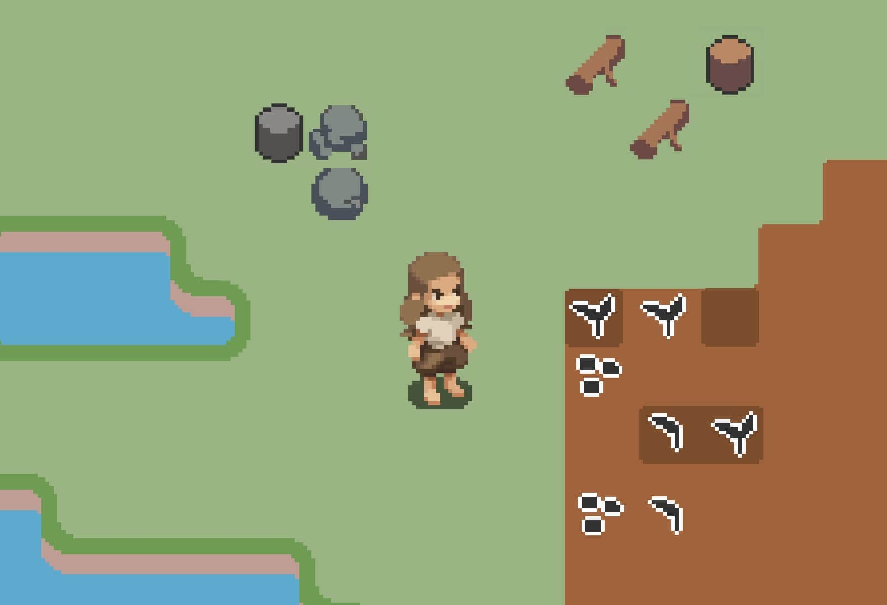

The Challenge
Exponential art requirements
Each new terrain type requires dozens of transition tiles, making world expansion impractical
Complex manual coordination
Traditional systems demand separate handling for visuals, collision, and game logic
Dual-Grid Architecture
Traditional
Dual Grid
Tiles Required
256+ tiles
16 tiles
Setup Complexity
Edge case hell
Simple offset
Visual Result
Jagged corners
Perfect curves
The Innovation
Tiles offset by half a grid unit create perfectly rounded corners with only 16 base tiles. Traditional tile systems require 256+ tiles and complex edge calculations to achieve similar results.
Property Painting System
Custom tooling that extends standard tile systems. Paint additional data layers over any area with brushes, dramatically reducing manual setup time while enabling precise control over game mechanics.

Logic and visual grids working in parallel

Complex multi-terrain environments with objects
The Results
Before
Assets
256+ tiles per terrain type
Workflow
Manual tile placement with debugging
Scaling
Each terrain multiplies complexity
After
Assets
16 tiles with perfect curves
Workflow
Property painting with brushes
Scaling
New terrains integrate seamlessly